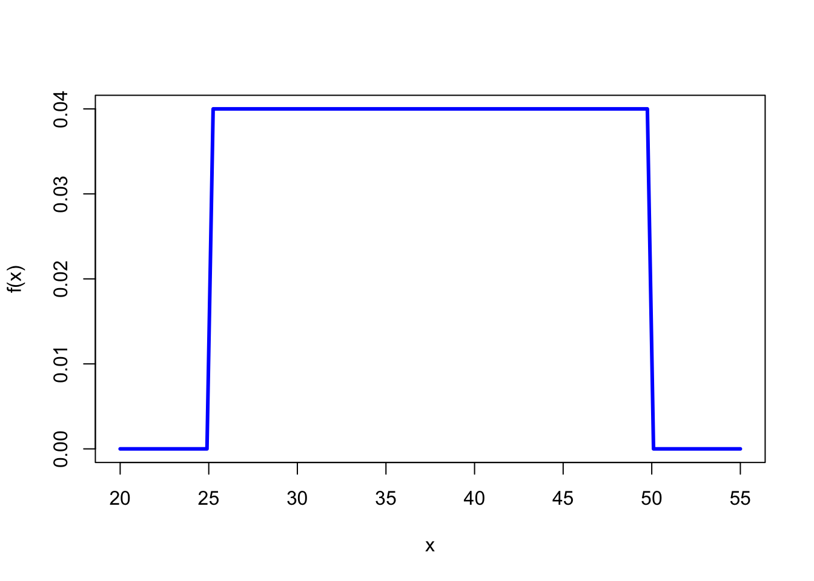
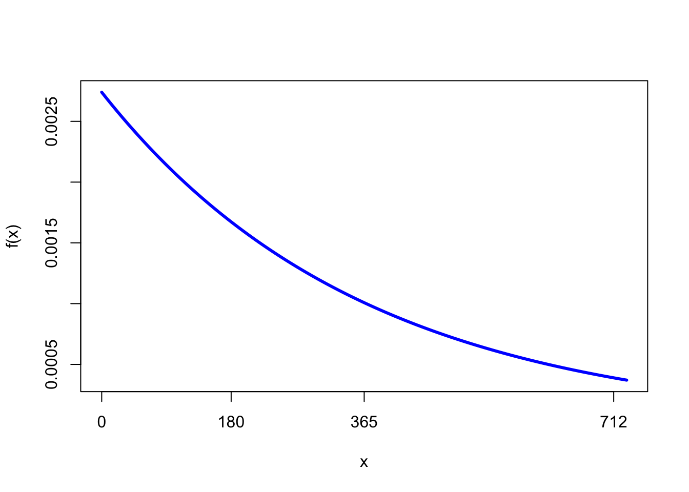

Homework Chapter 6
Section 1
Q18
\[ f(x) = \frac{1}{b-a} = \frac{1}{50 - 25} = \frac{1}{25} \]
\[ P(x > 45) = (50 - 45) * \frac{1}{25} = 5/25 = .2 \]
\[ P(35 < x < 45) = (45 - 35) * \frac{1}{25} = 10/25 = .4 \]
\[ P(x < 40) = (40 - 25) * \frac{1}{25} = 15/25 = .6 \]
Q19

\[ P(x < 180) = 1 - e^{-\frac{1}{365} \times 180} = .39 \]
\[ P(x > 365) = e^{-365/365} = .37 \]
- P(A) = battery 1 lasts
- P(B) = battery 2 lasts
Assume A and B are independent
\[ P(A \cap B) = P(A)P(B) = .37 * .37 = 0.14 \]
Section 2
Q46-48
46
[1] 0.2380347
[1] 0.117515248
The chance of seeing that in a boy is:
[1] 0.005196079Less than 1% chance of observing a baby boy that was less than 10 pounds.
Q68
0.3085375
0.2417303
Probabilty of more than 215 for 1: 0.0668072
2 people independently 0.0044632
Section 3
Q13
Using normal approximation:
[1] 0.5467453Using Binom numbers
[1] 0.5460421Q15
Normal approximation
[1] 0.2467814Using Binom Numbers
[1] 0.2446628Q24
RH prob = .15
Blood bank get 92 donors
- z score (10.5)
[1] -0.9635293probability using approximation
[1] 0.167641exact using binomial
[1] 0.1679402- zscore lower (14.5)
[1] 0.204385score upper (20.5)
[1] 1.956256answer:
[1] 0.3938088- z-score (use 11.5 or fewer are rh NEGATIVE)
[1] -0.6715507[1] 0.2509349Q28
exact
[1] 0.009470831approximation
[1] 0.01237234The approximation seems to slightly over estimate the real probability - very close though